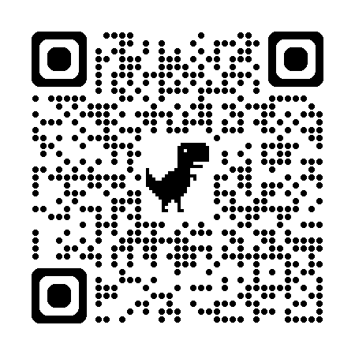

Resultados finais · conjunto de teste
Matrizes de confusão
Linha = real · Coluna = prevista · acertos · erros · maiores confusões
Resultados finais · conjunto de teste
Taxas de erro
Taxa de erro por classe
Demonstração interativa
Desenhe um dígito
Modo demonstração — resultados simulados, não são previsões reais dos modelos.
Naive Bayes
?
dígito previsto
Probabilidade por classe
KNN
?
dígito previsto
Proporção de votos por classe
Entrada do modelo
28 × 28 pixels
28 × 28 pixels
Aguardando
Desenhe um dígito e clique em Classificar.

github.com/rafabrensk/MNIST-KNN-NB-Classification